토목기사 (2010-09-05 기출문제)
1과목: 응용역학
1. 다음 그림과 같은 I형 단면보에 8t의 전단력이 작용할 때 상연(上椽)에서 5cm 아래인 지점에서의 전단응력은? (단, 단면 2차 모멘트는 100000cm4이다.)
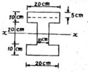
- 5.25 kg/cm2
- 7.0 kg/cm2
- 12.25 kg/cm2
- 16.0 kg/cm2
(정답률: 33%)

2. 그림과 같이 2개의 집중하중이 단순보 위를 통과할 때 절대최대 휨모멘트의 크기와 발생위치 x는?
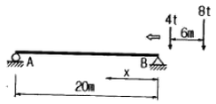
- Mmax=36.2tㆍm, x=8m
- Mmax=38.2tㆍm, x=8m
- Mmax=48.6tㆍm, x=9m
- Mmax=50.6tㆍm, x=9m
(정답률: 75%)
3. 그림과 같은 내민보에서 D점에서 집중하중 P=5t 이 작용할 경우 C 점의 휨모멘트는 얼마인가?
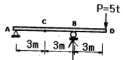
- -2.5tㆍm
- -5tㆍm
- -7.5tㆍm
- -10tㆍm
(정답률: 74%)
4. 길이 5m, 단면적 10cm2의 강봉을 0.5mm 늘이는데 필요한 인장력은? (단, E=2×105kg/cm2)
- 2t
- 3t
- 4t
- 5t
(정답률: 51%)
5. 그림과 같은 구조물에서 C점의 수직처짐을 구하면? (단, EI=2×105kgㆍcm2 이며 자중은 무시한다.)
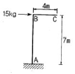
- 2.70mm
- 3.57mm
- 6.24mm
- 7.35mm
(정답률: 59%)
6. 그림과 같은 단주에서 편심거리 e 에 P=800kg이 작용할 때 단면에 인장력이 생기지 않기 위한 e의 한계는?
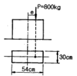
- 10cm
- 8cm
- 9cm
- 5cm
(정답률: 64%)
7. 그림 (a)와 (b)의 중앙점의 처짐이 같아지도록 그림 (b)의 등분포하중 w를 그림 (a)의 하중 P의 함수로 나타내면 얼마인가? (단, 재료는 같다.)
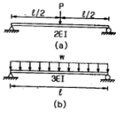
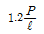
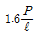
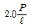
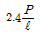
(정답률: 62%)
8. 그림에서 직사각형의 도심축에 대한 단면상승 모멘트 Ixy의 크기는?
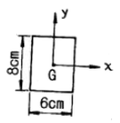
- 576 cm4
- 256 cm4
- 142 cm4
- 0 cm4
(정답률: 80%)
9. 그림과 같은 내민보에서 자유단 C 점의 처짐이 0이 되기 위한 R/Q는 얼마인가? (단. EI는 일정하다.)
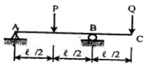
- 3
- 4
- 5
- 6
(정답률: 45%)
10. 그림과 같은 구조에서 절대값이 최대로 되는 휨모멘트의 값은?(오류 신고가 접수된 문제입니다. 반드시 정답과 해설을 확인하시기 바랍니다.)
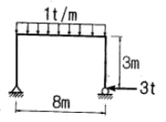
- 8.0 tㆍm
- 5.0 tㆍm
- 4.0 tㆍm
- 3.0 tㆍm
(정답률: 18%)
11. 그림과 같이 1차 부정정보에 등간격으로 집중하중이 작용하고 있다. 반력 Ra와 Rb의 비는?
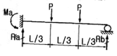
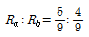
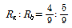
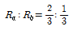
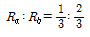
(정답률: 57%)
12. 탄성계수는 2.3×105 kg/cm2, 프와송비는 0.35일 때 전단 탄성계수의 값을 구하면?
- 8.1×105 kg/cm2
- 8.5×105 kg/cm2
- 8.9×105 kg/cm2
- 9.3×105 kg/cm2
(정답률: 66%)
13. 다음 그림과 같은 T형 단면에서 도심축 C-C 축의 위치 X는?
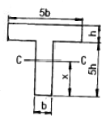
- 2.5h
- 3.0h
- 3.5h
- 4.0h
(정답률: 75%)
14. 다음 트러스의 부재력이 0인 부재는?
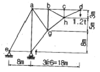
- 부재 a-e
- 부재 a-f
- 부재 b-g
- 부재 c-h
(정답률: 80%)
15. 아래 그림과 같은 단순보의 지점 A에 모멘트 Ma작용할 경우 A점과 B점의 처짐각 비
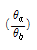
의 크기는?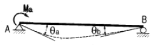
- 1.5
- 2.0
- 2.5
- 3.0
(정답률: 66%)


16. 양단고정의 장주에 중심축하중이 작용할 때 이 기둥의 좌굴응력은? (단, E=2.1×105kg/cm2이고, 기둥은 지름이 4cm인 원형기둥 이다.)
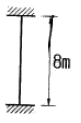
- 33.5kg/cm2
- 67.2kg/cm2
- 129.5kg/cm2
- 259.1kg/cm2
(정답률: 59%)
17. 전단면이 균일하고, 재질이 같은 2개의 캔틸레버보가 자유단의 처짐값이 동일하다. 이 때 캔틸레버보(B)의 휨강성 EI값은?
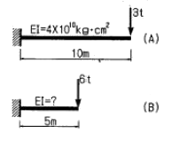
- 0.5×1010kgㆍcm2
- 1.0×1010kgㆍcm2
- 2.0×1010kgㆍcm2
- 3.0×1010kgㆍcm2
(정답률: 53%)
18. 지름 d=120cm, 벽두께 t=0.6m인 긴 강관이 q=20kg/cm2의 내압을 받고 있다. 이 관벽 속에 발생하는 원환응력 σ의 크기는?
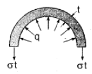
- 300kgㆍcm2
- 900kgㆍcm2
- 1800kgㆍcm2
- 2000kgㆍcm2
(정답률: 66%)
19. 그림과 같이 원(D=40cm)과 반원(r=40cm)으로 이루어진 단면의 도심거리 y값은?
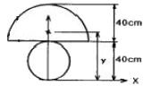
- 17.58cm
- 17.98cm
- 44.65cm
- 49.48cm
(정답률: 62%)
20. 그림과 같은 연속보에서 B지점 모멘트 MB는? (단, EI는 일정하다.)
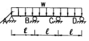
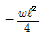
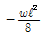
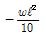
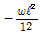
(정답률: 41%)
2과목: 측량학
21. 다음 중 항공사진의 기복변위와 관계없는 것은?
- 중심투영
- 정사투영
- 지형지물의 비고
- 촬영고도
(정답률: 53%)
22. 기지점의 지반고가 100m, 기지점에 대한 후시는 2.75m, 미지점에 대한 전시가 1.40m일 때 미지점의 지반고는?
- 98.65m
- 101.35m
- 102.75m
- 104.15m
(정답률: 52%)
23. 100m2의 정사각형의 토지의 면적을 0.1m2까지 정확하게 구하기 위한 필요하고도 충분한 한 변의 측정거리오차는?
- 3mm
- 4mm
- 5mm
- 6mm
(정답률: 60%)
24. 항공사진측량의 판독에 대한 설명 중 옳지 않은 것은?
- 사진상의 크기나 형상은 피사체의 내용을 판독하기 위하여 중요한 요소이다.
- 사진의 음영은 거칠음, 세밀함 등으로 표현되며, 지표의 상태 및 지질 판독에 이용되는 요소이다.
- 사진의 색조는 피사체로부터의 반사광량에 따라 변화하나 사용하는 필름 현상시의 사진처리 등에 영향을 받는다.
- 사진판독의 정확도를 높이기 위해서는 사진상의 변형, 색조, 형상 등 제반요소의 영향을 종합적으로 고려해야 한다.
(정답률: 47%)
25. 지형을 표시하는 방법 중에서 짧은 선으로 지표의 기복을 나타내는 방법은?
- 점고법
- 단채법
- 영선법
- 등고선법
(정답률: 62%)
26. 곡선반경이 400m인 원곡선상을 70km/hr로 주행하려고 할 때 cant는? (단, 궤간 b=1.065m임)
- 73mm
- 83mm
- 93mm
- 103mm
(정답률: 66%)
27. DEM에 대한 설명으로 옳지 않은 것은?
- Digital Elevation Model(수치표고모델)의 약어이다.
- 균일한 간격의 격자점(X, Y)에 대해 높이값 Z를 가지고 있는 데이터이다.
- DEM을 이용하여 등고선을 제작하기도 한다.
- DEM에는 건물의 3차원 모델이 포함된다.
(정답률: 48%)
28. 거리와 각을 동일한 정밀도로 관측하여 다각측량을 하려고 한다. 이때 각 측량기의 정밀도가 10°라면 거리측량기의 정밀도는 약 얼마 정도이어야 하는가?
- 1/15000
- 1/18000
- 1/21000
- 1/25000
(정답률: 54%)
29. 중력이상에 대한 설명으로 옳지 않은 것은?
- 중력이상에 의해 지표면 밑의 상태를 추정할 수 있다.
- 중력이상에 대한 취급은 물리학적 축지학에 속한다.
- 중력이상이 양(+)이면 그 지점 부근에 무거운 물질이 있는 것으로 추정할 수 있다.
- 중력식에 의한 계산값에서 실측값을 뺀 것이 중력이상이다.
(정답률: 56%)
30. 그림과 같은 삼각망에서 조건식의 총수는?
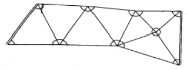
- 9개
- 10개
- 11개
- 12개
(정답률: 44%)
31. 사진의 크기는 23cm×23cm이고 두 사진의 주점기선 길이가 10cm일 때 중중복도는 약 얼마인가?
- 43%
- 64%
- 57%
- 78%
(정답률: 63%)
32. 전자파거리측량기로 거리를 관측할 때 발생되는 관측 오차에 대한 설명으로 옳은 것은?
- 모든 관측 오차는 관측 거리에 비례한다.
- 관측거리에 비례하는 오차와 비례하지 않는 오차가 있다.
- 모든 관측 오차는 관측 거리에 무관하다.
- 관측 거리가 어떤 길이 이상으로 되면 관측 오차가 상쇄되어 길이에 영향이 없어진다.
(정답률: 56%)
33. 그림과 같은 터널 내 수준측량의 관측결과에서 A점의 지반고가 15.32m 일 때 C점의 지반고는? (단, 관측값의 단위는 m 이다.)
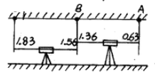
- 16.49m
- 16.32m
- 14.49m
- 14.32m
(정답률: 59%)
34. 결합트래버스에서 시점A와 종점B의 위치가 확정되었다. A점의 좌표 XA=75.13m, YB=128.37m, B점의 좌표 XA=160.27m, YB=642.15m, A에서 B까지의 합위거가 +84.82m, 합경거가 +513.62m 일 때의 결합오차는?
- 0.36m
- 0.40m
- 0.42m
- 044m
(정답률: 33%)
35. 원곡선 설치 시 일어날 수 있는 오차의 원인과 거리가 먼 것은?
- 교점까지의 시통 불량
- 각과 거리 관측의 오차
- 토털스테이션이나 데오도라이트의 조정 불량
- 토털스테이션이나 데오도라이트의 수평맞추기, 중심맞추기 불량
(정답률: 47%)
36. 삼각수준측량에서 1:25000의 정확도로 수준차를 허용할 경우 지구의 곡률을 고려하지 않아도 되는 시준거리는? (단, 공기의 굴절계수 K=0.14, 지구반경 R=6370km)
- 593m
- 693m
- 793m
- 893m
(정답률: 40%)
37. 그림과 같이
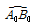
의 노선을 e=10m 만큼 이동하여 내측으로 노선을 설치하고자 한다. 새로운 반경 Pw은? (단, R0=200m, I=60°)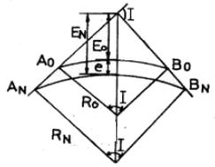
- 217.64m
- 238.26m
- 250.50m
- 264.64m
(정답률: 31%)
38. 허용 정밀도(폐합비)가 1:1000인 평탄지에서 전진법으로 평판측량을 할 때 현장에서의 전체 측선 길이의 합이 400m이었다. 이 경우 폐합오차는 최대 얼마 이내로 하여야 하는가?
- 10cm
- 20cm
- 30cm
- 40cm
(정답률: 50%)
39. 비행장이나 운동장과 같이 넓은 지형의 정지 공사시에 토량을 계산하고자 할 때 적당한 방법은?
- 점고법
- 등고선법
- 중앙단면법
- 양단면 평균법
(정답률: 65%)
40. 단곡선을 설치하기 위하여 교각(I)=80°를 측정하였다. 외할(E)을 10m로 하고자 할 때 곡선길이(C.L)는?
- 33m
- 46m
- 74m
- 117m
(정답률: 58%)
3과목: 수리학 및 수문학
41. Dupuit의 침윤선 공식으로 옳은 것은? (단, q=단위폭당의 유량, ℓ=침윤선 길이, k=투수계수)
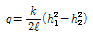
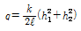
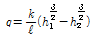
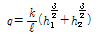
(정답률: 58%)
42. 원관내 유체가 흐를 때 마찰력에 관한 설명 중 옳지 않은 것은?
- 수두경사에 비례한다.
- 관의 직경에 비례한다.
- 관의 길이에 비례한다.
- 점성계수에 비례한다.
(정답률: 39%)
43. 어떤 유역 내에 5대의 우량관측소에서 표와 같은 지배면적에 우량이 측정되었을 때 Thiessen법으로 산정한 유역의 평균우량은?
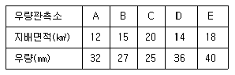
- 31.81mm
- 32.00mm
- 32.72mm
- 33.04mm
(정답률: 53%)
44. 항력
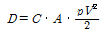
에서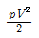
항이 의미하는 것은?- 속도
- 길이
- 질량
- 동압력
(정답률: 54%)
45. 얻어진 강우 기록으로부터 우량의 값, 유역면적 및 강우 계속시간 등의 관계를 규명하는 것은?
- 유출함수법
- DAD해석
- 단위도법
- 비유량해석
(정답률: 66%)
46. 직사각형 수로에서 유량이 2m3/sec일 때 비에너지를 구한 값은? (단, 에너지 보정계수 α=1)
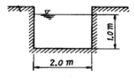
- 1.⑤m
- 1.51m
- 2.⑤m
- 2.51m
(정답률: 52%)
47. Manning의 평균유속 공식에서 Chezy의 평균유속계수 C에 대응되는 것은?
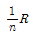
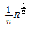
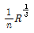
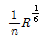
(정답률: 50%)
48. 유선(Streamline)에 대한 설명으로 옳은 것은?
- 유선에 수직한 방향으로 속도 성분이 존재한다.
- 유선은 어느 순간의 속도 벡터에 접하는 곡선이다.
- 흐름이 정상류일 때는 유선과 유적선이 일치한다.
- 유선 방정식은
 이다.
이다.
(정답률: 24%)
49. Darcy의 법칙에 대한 설명으로 옳지 않은 것은?
- Darcy의 법칙은 지하수의 층류흐름에 대한 마찰저항공식이다.
- 투수계수는 물의 점성계수에 따라서도 변화한다.
- Reynolds수가 클수록 안심하고 적용할 수 있다.
- 평균유속이 동수경사와 비례관계를 가지고 있는 흐름에 적용될 수 있다.
(정답률: 64%)
50. 유역면적이 25㎢이고, 1시간에 내린 강우량이 120mm 일 때 하천의 유출량이 360m3/sec이면 이 지역에 대한 합리식의 유출계수는?
- 0.32
- 0.43
- 0.56
- 0.72
(정답률: 55%)
51. 그림과 같이 좌우가 대칭인 하천단면의 경심(R)은?
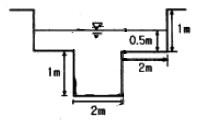
- 0.72m
- 0.63m
- 0.56m
- 0.50m
(정답률: 56%)
52. 물의 순환과정에 포함되는 용어로 짝지어지지 않은 것은?
- 강수-중산
- 침투-침루
- 침루-저류
- 풍향-상대습도
(정답률: 54%)
53. 직사각형 위어에서 위어 폭 4.0m, 위어 높이 0.5m, 월류 수심이 0.8m 일 때 월류량은? (단, C=0.66이다.)
- 4.6m3/sec
- 5.6m3/sec
- 6.6m3/sec
- 7.6m3/sec
(정답률: 48%)
54. 바닥으로부터 거리가 y(m)일 때의 유속이 v=-4y2+y(m/s)인 점성유체 흐름에서 전단력이 0 이 되는 지점까지의 거리는?
- 0m
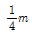
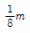
(정답률: 44%)
55. 저수지의 물을 방류하는데 1:225로 축소된 모형에서 4분이 소요되었다면, 원형에서는 얼마나 소요 되겠는가?
- 60분
- 120분
- 900분
- 3375분
(정답률: 44%)
56. 오리피스의 직경이 5cm, 수두가 5m이고 유량이 5000cm3/sec 이라면 이 오리피스의 유량계수(C)는?
- 0.231
- 0.597
- 0.257
- 0.612
(정답률: 44%)
57. 다음과 같은 1시간 단위도로부터 3시간 단위도를 유도하였을 경우 3시간 단위도의 최대종거는 얼마인가?
- 3.3m3/sec
- 8.0m3/sec
- 10.0m3/sec
- 24.0m3/sec
(정답률: 48%)
58. 흐름을 지배하는 가장 큰 요소가 중력일 때, 이에 따라 흐름을 구분하는 방법으로 쓰이는 수는?
- Froude수
- Reynol수
- Weber수
- Cauchy수
(정답률: 52%)
59. 물의 점성계수를 μ, 동점성계수를 v, 밀도를 p라 할 때 관계식으로 옳은 것은?
- v=pμ
(정답률: 52%)
60. 레이놀드(Reynolds)수가 1000인 관에 대한 마찰손실계수(f)는?
- 0.032
- 0.046
- 0.⑤2
- 0.064
(정답률: 59%)
4과목: 철근콘크리트 및 강구조
61. 콘크리트구조설계기준에서 규정하고 있는 최소 전단철근 및 전단철근의 강도에 대한 설명으로 옳은 것은? (단, bw는 복부폭, s는 전단철근간격 이다.)
- 최소 전단철근은 경사균열폭이 확대되는 것을 억제함으로써 사인장응력에 의한 콘크리트의 취성파괴를 방지하기 위한 것이다.
- 전단철근의 최대 전단강도(V3)는
 이하로 하여야 한다.
이하로 하여야 한다. - 최소 전단철근은 모든 철근콘트리트 휨부재에 배치하여야 한다.
- 전단철근의 성계기준항복강도는 300MPa를 초과할 수 없다.
(정답률: 27%)
62. 근사해법에 의해 휨모멘트를 계산한 경우를 제외하고, 어떠한 가정의 하중을 적용하여 탄성이론에 의하여 산정한 연속 휨부재 받침부의 부모멘트 재분배에 대한 설명으로 옳은 것은? (단, 최외단 인장철근의 순인장변형률(Et)가 0.0075 이상인 경우)
- 20% 이내에서 100Et%만큼 증가 또는 감소시킬 수 있다.
- 20% 이내에서 500Et%만큼 증가 또는 감소시킬 수 있다.
- 20% 이내에서 750Et%만큼 증가 또는 감소시킬 수 있다.
- 20% 이내에서 1000Et%만큼 증가 또는 감소시킬 수 있다.
(정답률: 34%)
63. 다음 중 프리스트레스트 콘크리트 부재에서 프리스트레스 손실의 원인이 아닌 것은?
- 정착장치에서의 활동
- 콘크리트의 건조수축
- PS강재의 항복
- 콘크리트의 크리프
(정답률: 42%)
64. 강합성 교량에서 콘크리트 슬래브와 강(鋼)주형 상부 플랜지를 구조적으로 일체가 되도록 결합시키는 요소는?
- 볼트
- 전단연결재
- 합성철근
- 접착제
(정답률: 59%)
65. 직사각형 기둥(300mm×450mm)인 띠철근 단주의 공칭축강도(Pn)는 얼마인가? (단, fck=28MPa, fy=400MPa, Ast=3854mm2)
- 2611.2kN
- 3263.2kN
- 3730.3kN
- 3963.4kN
(정답률: 51%)
66. 아래 그림과 같은 필렛용접의 형상에서 s=9mm일 때 목두께 a의 값으로 적당한 것은?
- 5.46mm
- 6.36mm
- 7.26mm
- 8.16mm
(정답률: 60%)
67. PS콘크리트의 균등질 보의 개념(homogeneous beam concept)을 설명한 것으로 가장 적당한 것은?
- 콘크리트에 프리스트레스가 가해지면 PSC부재는 탄성재료로 전환되고 이의 해석은 탄성이론으로 가능하다는 개념
- PSC 보를 RC 보처럼 생각하여, 콘크리트는 압축력을 받고 긴장재는 인장력을 받게 하여 두 힘의 우력 모멘트로 외력에 의한 휨모멘트에 저항시킨다는 개념
- PS콘크리트는 결국 부재에 작용하는 하중의 일부 또는 전부를 미리 가해지는 프리스트레스와 평행이 되도록 하는 개념
- PS콘크리트는 강도가 크기 때문에 보의 단면을 강재의 단면으로 가정하여 압축 및 인장을 단면전체가 부담할 수 있다는 개념
(정답률: 40%)
68. 복철근 보에서 압축철근에 대한 효과를 설명한 것으로 적절하지 못한 것은?
- 단면 저항 모멘트를 크게 증대시킨다.
- 지속하중에 의한 처짐을 감소시킨다.
- 파괴시 압축 응력의 깊이를 감소시켜 연성을 증대시킨다.
- 철근의 조립을 쉽게한다.
(정답률: 40%)
69. 그림과 같이 활화중(wL)은 30kN/m, 고정하중(wD)은 콘크리트의 자중(단위무게 23kN/m3)만 작용하고 있는 캔틸레버보가 있다. 이 보의 위험단면에서 전단철근이 부담해야 할 전단력은? (단, 하중은 하중조합을 고려한 소요강도(U)를 적용하고, fck=24MPa, fy=300MPa 이다.)
- 88.7kN
- 53.5kN
- 21.3kN
- 9.5kN
(정답률: 53%)
70. 콘크리트의 압축강도(fck)가 35MPa, 철근의 항복강도(fy)가 400MPa, 폭이 350mm, 유효깊이가 600mm인 단철근 직사각형 보의 최소철근량은 얼마인가?
- 690 mm2
- 735 mm2
- 777 mm2
- 816 mm2
(정답률: 55%)
71. 옹벽에서 T형보로 설계하여야 하는 부분은?
- 앞부벽식 옹벽의 압부벽
- 뒷부벽식 옹벽의 전면벽
- 앞부벽식 옹벽의 저판
- 뒷부벽식 옹벽의 뒷부벽
(정답률: 67%)
72. 직사각형 보에서 계수 전단력 Vu=70kN을 전단철근없이 지지하고자 할 경우 필요한 최소 유효깊이 d는 약 얼마인가? (단, bw=400mm, fck=21MPa, fy=350MPa)
- d=426mm
- d=556mm
- d=611mm
- d=751mm
(정답률: 41%)
73. As=4000mm2, 로 배근된 그림과 같은 복철근보의 탄성처짐이 15mm이다. 5년 이상의 지속하중에 의해 유발되는 장기처짐은 얼마인가?
- 15mm
- 20mm
- 25mm
- 30mm
(정답률: 53%)
74. 2방향 슬래브의 설계에서 직접설계법을 적용할 수 있는 제한 조건으로 틀린 것은?
- 슬래브판들은 단변 경간에 대한 장변 경간의 비가 2이하인 직사각형이어야 한다.
- 각 방향으로 3경간 이상이 연속되어야 한다.
- 각 방향으로 연속한 받침주 중심간 경간 길이의 차이는 긴 경간의 1/3이하이어야 한다.
- 모든 하중은 연직하중으로 슬래브판 전체에 등분포이고, 활하중은 고정하중의 2배 이상이라야 한다.
(정답률: 42%)
75. 그림과 같이 경간 L=9m인 연속 슬래브에서 반 T형 단면의 유효폭(b)은 얼마인가?
- 1100mm
- 1⑤0mm
- 900mm
- 850mm
(정답률: 52%)
76. 초기 프리스트레스가 1200MPa이고, 콘크리트의 건조수축변형률 ∊??=1.8×10-4 일 때 긴장재의 인장응력의 감소는? (단, PS강재의 탄성계수 Ep=2.0×105 MPa)
- 12MPa
- 24MPa
- 36MPa
- 48MPa
(정답률: 46%)
77. 강도설계법에서 강도감소계수(∅)를 규정하는 목적이 아닌 것은?
- 재료 강도와 치수가 변동할 수 있으므로 부재의 강도 저하 확률에 대비한 여유를 반영하기 위해
- 부정확한 설계 방정식에 대비한 여유를 반영하기 위해
- 구조물에서 차지하는 부재의 중요도 등을 반영하기 위해
- 하중의 변경, 구조해석 할 때의 가정 및 계산의 단순화로 인해 야기될지 모르는 초과하중에 대비한 여유를 반영하기 위해
(정답률: 53%)
78. 비틀림철근에 대한 설명으로 틀린 것은? (단, Aoh는 가장 바깥의 비틀림 보강철근의 중심으로 닫혀진 단면적이고, Ph는 가장 바깥의 횡방향 폐쇄스터럽 중심선의 둘레이다.)
- 횡방향 비틀림 철근은 종방향 철근 주위로 135° 표준갈고리에 의해 정착하여야 한다.
- 비틀림모멘트를 받는 속빈 단면에서 횡방향 비틀림철근의 중심선으로부터 내부 벽면까지의 거리는 0.5Aoh/Ph이상아 되도록 설계하여야 한다.
- 횡방향비틀림철근의 간격은 Ph/6및 400mm 보다 작아야 한다.
- 종방향 비틀림철근은 양단에 정착하여야 한다.
(정답률: 53%)
79. 강도 설계법에서 그림과 같은 T형보에 압축면단에서 중립축까지의 거리(ε)는 약 얼마인가? (단, As=14-D25=7094mm2, fck=35MPa, fy=400MPa)
- 132mm
- 155mm
- 165mm
- 186mm
(정답률: 43%)
80. 휨모멘트와 축력을 동시에 받는 부재에서 fy=300MPa일 때 계수축력 Pv<0, 10fckAg이고, 공칭간도에서 최외단 인장철근의 순인장변형률 Et=0.0048일 때 띠철근으로 보강된 단면의 강도감소계수를 구하는 식으로 옳은 것은? (단, 여기에서 Ag는 단면의 전체 단면적이고, Ey는 철근의 설계기준 항복변형률 이다.)
- ∅=0.65+(Et-Ey)(0.2/0.0035)
- ∅=0.65+(Et-Ey)(0.2/0.00325)
- ∅=0.65+(Et-Ey)(0.2/0.003)
- ∅=0.65+(Et-Ey)(0.2/0.0025)
(정답률: 33%)
5과목: 토질 및 기초
81. 다음 중 흙의 강도를 구하는 실험이 아닌 것은?
- 압밀시험
- 직접전단시험
- 일축압축시험
- 삼축압축시험
(정답률: 37%)
82. 동상 방지대책에 대한 설명 중 옳지 않은 것은?
- 배수구 등을 설치하여 지하수위를 저하시킨다.
- 모관수의 상승을 차단하기 위해 조립의 차단층을 지하수위보다 높은 위치에 설치한다.
- 동결 깉이보다 낮게 있는 흙을 동결하지 않는 흙으로 치환한다.
- 지표의 흙을 화학약품으로 처리하여 동결온도를 내린다.
(정답률: 43%)
83. 다음 그림과 같은 정방향 기초에서 안전율을 3으로 할 때 Terzaghi 공식을 사용하여 지지력을 구하고자 한다. 이 때 한 변의 최소길이는? (단, 흙의 전단강도 c=6t/m2, ∅=0°이고, 흙의 습윤 및 포화단위 중량은 각각 1.9t/m3, 2.0t/m3, Nc=5.7, Nq=1.0, Nr=0이다.)
- 1.115m
- 1.432m
- 1.512m
- 1.624m
(정답률: 33%)
84. 흙의 활성도(活性度)에 대한 설명으로 틀린 것은?
- 활성도는 (액성지수/점토함유율)로 정의된다.
- 활성도는 점토광물의 종류에 따라 다르므로 활성도로부터 점토를 구성하는 점토광물을 추정할 수 있다.
- 점토의 활성도가 클수록 물을 많이 흡수하여 팽창이 많이 일어난다.
- 흙입자의 크기가 작을수록 비표면적이 커져 물을 많이 흡수하므로, 흙의 활성은 점토에서 뚜렷이 나타난다.
(정답률: 38%)
85. 연약지반개량공법 중 프리로딩공법에 대한 설명으로 틀린 것은?
- 압밀침하를 미리 끝나게 하여 구조물에 잔류침하를 남기지 않게 하기위한 공법이다.
- 도로의 성토나 항만의 방파제와 같이 구조물 자체의 일부를 상재하중으로 이용하여 개량 후 하중을 제거할 필요가 없을 때 유리하다.
- 압밀계수가 작고 압밀토층 두께가 큰 경우에 주로 적용한다.
- 압밀을 끝내기 위해서는 많은 시간이 소요되므로, 공사 기간이 충분해야한다.
(정답률: 50%)
86. 말뚝기초의 지반거동에 관한 설명으로 틀린 것은?
- 기성말뚝을 타입하면 전단파괴를 일으키며 말뚝 주위의 지반은 교란된다.
- 말뚝에 작용한 하중은 말뚝주변의 마찰력과 말뚝선단의 지지력에 의하여 주변 지반에 전달된다.
- 연약지반상에 타입되어 지반이 먼저 변형하고 그 결과 말뚝이 저항하는 말뚝을 주동말뚝이라 한다.
- 말뚝 타입 후 지지력의 증가 또는 감소 현상을 시간효과(Time effect)라 한다.
(정답률: 56%)
87. 흙의 다짐에 관한 설명으로 틀린 것은?
- 다짐에너지가 클수록 최대건조단위중량(rdmax)은 커진다.
- 다짐에너지가 틀수록 최적함수비(wopt)는 커진다.
- 점토를 최적함수비(wopt)보다 작은 함수비로 다지면 면모구조를 갖는다.
- 투수계수는 최적함수비(wopt) 근처에서 거의 최소값을 나타낸다.
(정답률: 52%)
88. 다음 그림에서 분사현상에 대한 안전율을 구하면?
- 1.01
- 1.33
- 1.66
- 2.01
(정답률: 57%)
89. 토압에 대한 다음 설명 중 옳은 것은?
- 일반적으로 정지토압계수는 주동토압계수보다 작다.
- Rankine 이론에 의한 주동토압의 크기는 Coulomb 이론에 의한 값보다 작다.
- 옹벽, 흙막이벽체, 널말뚝 중 토압분포가 삼각형 분포에 가장 가까운 것은 옹벽이다.
- 극한 주동상태는 수동상태보다 휠씬 더 큰 변위에서 발생한다.
(정답률: 49%)
90. 외경(Do) 50.8mm, 내경(Di) 34.9mm인 스플리트 스푼 샘플러의 면적비로 옳은 것은?
- 46%
- 53%
- 106%
- 112%
(정답률: 61%)
91. Terzaghi는 포화점토에 대한 1차 압밀이론에서 수학적해를 구하기 위하여 다음과 같은 가정을 하였다. 이 중 옳지 않은 것은?
- 흙은 균질하다.
- 흙입자와 물의 압축성은 무시한다.
- 흙속에서의 물의 이동은 Darcy 법칙을 따른다.
- 투수계수는 압력의 크기에 비례한다.
(정답률: 44%)
92. 현장 도로 토공에서 모래치환법에 의한 흙의 밀도 시험을 하였다. 파낸 구멍의 체적이 V=1960cm3, 흙의 질량이 3390g이고, 이 흙의 함수비는 10%이었다. 실험실에서 구한 최대 건조 밀도 rdmax=1.65g/cm3일 때 다짐도는 얼마인가?
- 85.6%
- 91.0%
- 95.2%
- 98.7%
(정답률: 53%)
93. 어떤 점토의 토질실험 결과 일축압축강도 0.48kg/cm2, 단위중량 1.7t/m3이었다. 이 점토의 한계고는?
- 6.34m
- 4.87m
- 9.24m
- 5.65m
(정답률: 49%)
94. 어떤 점토지반의 표준관입 실험 결과 N값이 2~4이었다. 이 점토의 consistency는?
- 대단히 견고
- 연약
- 견고
- 대단히 연약
(정답률: 52%)
95. 어떤 시료를 압도분석 한 결과, 0.075mm(No 200)체 통과량이 6515 이었고, 애터버그한계 시험결과 액성한계가 40%이었으며 소성도표(Plasticity chart)에서 A선위의 구역에 위피한다면 이 시료는 통일분류법(USCS)상 기호로서 옳은 것은?
- CL
- SC
- MH
- SM
(정답률: 45%)
96. 점토 지반의 강성 기초의 접지압 분포에 대한 설명으로 옳은 것은?
- 기초 모서리 부분에서 최대응력이 발생한다.
- 기초 중앙 부분에서 최대응력이 발생한다.
- 기초 밑면의 응력은 어느 부분이나 동일하다.
- 기초 밑면에서의 응력은 토질에 관계없이 일정하다.
(정답률: 57%)
97. 10m 두께의 포화된 정규압밀점토층의 지표면에 매우 넓은 범위에 걸쳐 5.0t/m2의 등분포하중이 작용한다. rset=2.0t/m2, 압축지수(Cc)=0.8, eo=0.6, 압밀계수(Cv)×=10-5cm2/sec일 때 다음 설명 중 틀린 것은? (단, 지하수위는 점토층 상단에 위치한다.)
- 초기 과잉간극수압의 크기는 5.0t/m2이다.
- 점토층에 설치한 피에조미터의 재하직후 물의 상승고는 점토층 상면으로부터 5m이다.
- 압밀침하량이 75.25cm 발생하면 점토층의 평균압밀도는 50%이다.
- 일면배수조건이라면 점토층이 50% 압밀하는데 소요일수는 24500일 이다.
(정답률: 42%)
98. 아래 그림과 같은 정규압밀점토지반에서 점토층 중간에서의 비배수 점착력은? (단, 소성지수는 50%임)
- 5.38t/m2
- 6.39t/m2
- 7.38t/m2
- 8.38t/m2
(정답률: 27%)
99. 흙의 모관상승에 대한 설명으로 틀린 것은?
- 흙의 모관상승고는 간극비에 반비례하고, 유효 입경에 반비례한다.
- 모관상승고는 점토, 실트, 모래, 자갈의 순으로 점점 작아진다.
- 모관상승이 있는 부분은 (-)의 간극수압이 발생하여 유효응력이 증가한다.
- Stokes법칙은 모관성승에 중요한 영향을 미친다.
(정답률: 28%)
100. ∅=0°인 포화된 점토시료를 채취하여 일축압축시험을 행하였다. 공시체의 직경이 4cm, 높이가 8cm이고 파괴시의 하중계의 읽음 값이 4.0kg, 축방향의 변형량이 1.6cm 일때, 이 시료의 전단강도는 약 얼마인가?
- 0.07kg/cm2
- 0.13kg/cm2
- 0.25kg/cm2
- 0.32kg/cm2
(정답률: 38%)
6과목: 상하수도공학
101. 수중 알칼리도가 부족한 원수에 적합하여 경도를 증가시키지 않는 응집제는?
- Al2(SO4)3
- Al2(SO4)3 + Ca(OH)2
- Al2(SO4)3 + Na2CO3
- Al2(SO4)3 + CaO
(정답률: 47%)
102. 합류식과 분류식에 대한 설명으로 옳지 않은 것은?
- 합류식의 경우 관경이 커지기 때문에 2계통인 분류식보다 건설비용이 많이 든다.
- 분류식의 경우 오수와 우수를 별개의 관로로 배제하기 때문에 오수의 배제계획이 합리적이 된다.
- 분류식의 경우 관거내 퇴적은 적으나 수세효과는 기대 할 수 없다.
- 합류식의 경우 일정량 이상이 되면 우천시 오수가 월류한다.
(정답률: 54%)
103. 펌프의 분류 중 원심펌프의 특징에 대한 설명으로 옳은 것은?
- 일반적으로 효율이 높고, 적용 범위가 넓으며, 적은 유량을 가감하는 경우 소요동력이 적어도 운전에 지장이 없다.
- 양정변화에 대하여 수량의 변동이 적고 또 수량변동에 대해 동력의 변화도 적으므로 우수용 펌프 등 수위변동이 큰 곳에 적합하다.
- 회전수를 높게 할 수 있으므로, 수형으로 되며 전양정이 4m 이하인 경우에 경제적으로 유리하다.
- 펌프와 전도기를 일치로 펌프흡입실내에 설치하며, 유입수량이 적은 경우 및 펌프장의 크기에 제한을 받는 경우 등에 사용한다.
(정답률: 39%)
104. 하수관거의 단면에 대한 설명으로 옳지 않은 것은?
- 계란형은 유량이 적은 경우 원형거에 비해 수리학적으로 유리하다.
- 말굽형은 상반부의 아치작용에 의해 역학적으로 유리하다.
- 원형 직사각형은 역학계산이 비교적 간단하다.
- 원형은 주로 공장제품이므로 지하수의 침투를 최소화 할 수 있다.
(정답률: 56%)
1⑤. 계획정수량 40000m3/day인 정수장에서 5개의 여과지를 설치하여 여과속도를 1.5×10-3m/s로 할 경우 여과지 1개당 면적은 얼마로 하여야 하는가?
- 30m2
- 62m2
- 309m2
- 1481m2
(정답률: 39%)
106. 정수시설인 급속여과지의 여과속도는 어느 정도를 표준으로 하는가?
- 50~70m/day
- 80~100m/day
- 120~150m/day
- 180m/day 내외
(정답률: 62%)
107. 인구추정방법 중에서 대상지역의 포화인구를 먼저 추정한 후 계획기간의 인구를 추정하는 방법은?
- 등차급수법
- 등비급수법
- 최소자승법
- 로지스틱 곡선법
(정답률: 54%)
108. 간단한 배수관망 계산시 동치관법을 사용하는데 직경이 30cm, 길이가 300m인 관을 직경 20cm인 등치관으로 바꾸는 경우 길이는 약 몇 m인가?
- 42m
- 132m
- 1420m
- 2162m
(정답률: 23%)
109. 하수관거의 유속과 경사를 결정할 때 고려하여야 할 사항에 대한 설명으로 옳은 것은?
- 오수관거는 계획시간최대오수량에 대하여 유속을 최소 0.6m/sec로 한다.
- 우수관거 및 합류관거는 계획우수량에 대하여 유속을 최대 6.0m/sec로 한다.
- 유속은 일반적으로 하류방향으로 흐름에 따라 점차 작아지도록 한다.
- 관거경사는 하류방향으로 흐름에 따라 점차 커지도록 결정한다.
(정답률: 48%)
110. 접촉산화법의 특징으로 옳은 것은?
- 미생물량과 영향인자를 정상상태로 유지하기 위한 조작이 비교적 쉽다.
- 초기 건설비가 적다.
- 대규모시설에 적합하다.
- 분해속도가 낮은 기질제거에 효과적이다.
(정답률: 36%)
111. 펌프의 공동현상(cavitation)에 대한 설명으로 옳지 않은 것은?
- 펌프의 설치높이를 높이는 것이 방지책이 된다.
- 임펠러 입구에서 압력의 지나친 저하현상 때문에 발생한다.
- 펌프의 양정곡선과 효율곡선이 저하된다.
- 흡입양정을 짧게 하고 관로손실을 적게 하는 것의 방지책이 된다.
(정답률: 55%)
112. SVI에 대한 설명으로 옳지 않은 것은?
- 활성슬러지의 침강성을 나타내는 지표이다.
- SVI가 100 전후로 활성슬러지의 침강성이 양호한 경우에는 일반적으로 압밀침강에 해당 된다.
- SVI가 적을수록 슬러지가 농축되기 쉽다.
- SVI가 높아지면 MLSS도 상승한다.
(정답률: 46%)
113. 수원과 취수방법의 연결이 옳지 않은 것은?
- 하천수 - 취수탑
- 용천수 - 집수매거
- 복류수 - 취수관거
- 피압지하수 - 심정호
(정답률: 35%)
114. 배수지내에 물의 정체부가 생기지 않도록 설치하는 것은?
- 측관
- 도류벽
- 월류(weir)
- 검수구
(정답률: 63%)
115. 슬러지 팽화(bulking)의 원인과 가장 거리가 먼 것은?
- 유기물의 과도한 부하
- 과도한 질산화
- 영양물질의 불균형
- 용존산소량 불량
(정답률: 32%)
116. 하수의 혐기성 소화에 의한 슬러지의 분해과정을 세단계로 나눌 때, 포함되지 않는 것은?
- 가수분해 단계
- 유기화 단계
- 산 생성 단계
- 메탄 생성 단계
(정답률: 28%)
117. BOD 150mg/L의 하수 5000m3/d를 처리하여 BOD 1mg/L, Q=35000m3/d인 하천에 방류한 후, 곧 완전 혼합된 때의 BOD를 3mg/L 이하로 하려면 이 하수처리장의 BOD 제거율은 최소 몇 % 이상이어야 하는가? (단, 하천의 외부 오염물질 유입은 없는 것으로 한다.)
- 89%
- 91%
- 93%
- 95%
(정답률: 22%)
118. 상수의 공급과정을 올바르게 나타낸 것은?
- 취수 → 송수 → 도수 → 정수 → 배수 → 급수
- 취수 → 송수 → 정수 → 도수 → 배수 → 급수
- 취수 → 도수 → 송수 → 정수 → 배수 → 급수
- 취수 → 도수 → 정수 → 송수 → 배수 → 급수
(정답률: 63%)
119. 용존산소 부족곡선(DO Sag Curve)에서 산소의 복귀율(회복속도)이 최대로 되었다가 감소하기 시작하는 점은?
- 임계점
- 변곡점
- 오염 직후 점
- 포화 직전 점
(정답률: 59%)
120. 분류식 우수관거의 계획하수량에 대한 설명으로 옳은 것은?
- 계획시간최대오수량으로 한다.
- 계획시간최대오수량의 3배 이상으로 한다.
- 계획시간최대오수량에 계획오수량을 합한 것으로 한다.
- 계획우수량으로 한다.
(정답률: 36%)
주어진 문제에서 V = 8t, Q = 100000cm^4, I = 10000cm^4, t = 10cm 이므로
τ = (8t) * (100000cm^4) / (10cm * 10000cm^4) = 8 kg/cm^2
하지만 문제에서는 상연에서 5cm 아래인 지점에서의 전단응력을 구하라고 했으므로, 이 값을 2로 나누어 주어야 한다.
따라서 상연에서 5cm 아래인 지점에서의 전단응력은 8/2 = 4 kg/cm^2 이다.
하지만 보기에서는 단위가 kg/cm^2이 아니라 kgf/cm^2로 주어졌으므로, 이 값을 9.81로 나누어 주어야 한다.
따라서 최종적으로 상연에서 5cm 아래인 지점에서의 전단응력은 4/9.81 = 0.407 kgf/cm^2 이다.
이 값을 반올림하여 소수점 첫째자리까지 표기하면 0.4 kgf/cm^2 이다.
하지만 보기에서는 소수점 첫째자리까지 표기되어 있지 않으므로, 이 값을 0.5 kgf/cm^2와 0.4 kgf/cm^2 중에서 선택해야 한다.
하지만 전단응력은 항상 최대값이 아니라, 단면의 중심에서는 0이 되므로, 상연에서 5cm 아래인 지점에서의 전단응력은 최소값인 0.4 kgf/cm^2보다는 조금 더 큰 값이 될 것이다.
따라서 보기에서는 0.5 kgf/cm^2와 0.4 kgf/cm^2 중에서 선택할 수 있지만, 더 큰 값인 0.5 kgf/cm^2가 정답이 될 것이다.
이 값은 kg/cm^2로 환산하면 0.5 * 9.81 = 4.9⑤ kg/cm^2 이므로, 보기에서 주어진 "7.0 kg/cm^2"는 정답이 될 수 없다.